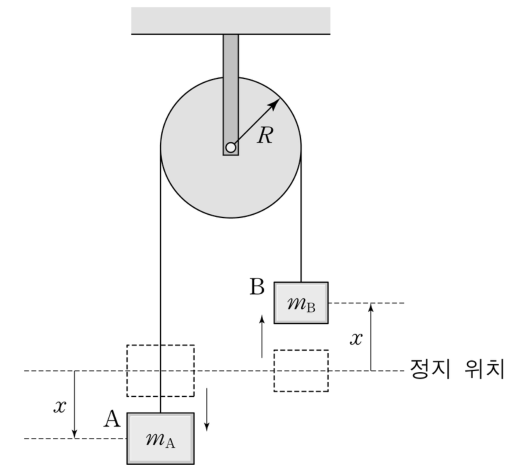

에너지 오개념과 초인지를 통한 개념 변화 수업 + 도르래의 회전과 일–에너지 정리Energy misconceptions and metacognitive conceptual change · Atwood machine with a rotating pulley and the work–energy theorem
에너지는 실생활에서 자주 사용하는 물리량이다. 김 교사는 중학교 과학 ‘일과 에너지’ 단원을 가르치기 전, 학생들의 사전 개념(preconception)을 조사하는 과정에서 학생들이 에너지 개념을 잘못 이해하고 있음을 발견하였다. <자료 1>은 에너지에 대해 학생들이 대화하는 내용을, <자료 2>는 초인지(metacognition)를 통한 물리 개념 변화 단계를, <자료 3>은 에너지와 관련된 물체의 운동을 나타낸 것이다. 【30점】
영희: 오늘 우리는 에너지를 많이 소모했어. 정말 피곤해.
민수: 힘은 에너지니까 힘을 내야겠어.
철수: 그래, 밥을 먹고 에너지를 보충하자.
(가) 학생의 사전 개념
(나) 정보 제시에 의한 갈등 상황
(다) 갈등 해소를 위한 학습 활동
(라) 학생의 새로운 개념
그림은 반지름 \(R\)인 고정 도르래에 질량이 각각 \(m_{\rm A}\), \(m_{\rm B}\)인 물체 A, B가 가느다란 줄에 연결되어, 정지 상태에서 움직이기 시작하여 각각 \(x\)만큼 이동한 순간의 모습을 나타낸 것이다. (단, 중력가속도는 \(g\), 도르래의 회전축에 대한 관성 모멘트는 \(I\)이고, 도르래와 회전축 사이의 마찰 및 줄의 질량은 무시하며, \(m_{\rm A}\gt m_{\rm B}\)이다.)

1-1 사전 개념과 초인지 개념 변화 수업 [20점]
김 교사는 <자료 1>에 나타난 학생들의 사전 개념 중에서 과학적 개념과 다른 부분을 과학적 개념으로 대체하기 위하여 <자료 2>와 같이 교수·학습을 계획하였다.
에너지에 대한 학생들의 사전 개념 중에서 과학적 개념과 다른 부분을 <자료 1>에서 모두 찾아 설명하시오.
<자료 2>에서 각 단계별로 초인지 요소와 학생 스스로 하는 초인지 질문을 1가지씩 제시하시오.
<자료 2>의 (다) 단계에서 개념 이해를 돕기 위하여 교사가 할 수 있는 교수·학습 활동을 3가지만 제시하시오.
1-2 도르래가 회전하지 않는 경우와 회전하는 경우 [10점]
<자료 3>에서 도르래가 회전하지 않는 경우와 회전하는 경우로 구분하여 물체 A의 운동에너지를 \(x\)의 함수로 각각 구하고, 이 두 경우의 차이를 일–에너지 정리를 적용하여 설명하시오. (단, 회전하는 경우 줄은 미끄러지지 않는다.)
도르래가 균일한 원판(질량 \(M\), \(I=\tfrac12MR^2\))일 때 두 장력의 차 \(T_A-T_B\)를 구하고, \(M\to0\)이면 어떻게 되는지 설명하시오.
회전하는 경우 계의 퍼텐셜 에너지 감소량 중 A의 운동 에너지가 차지하는 비율은?
정답모범 답안 요약
| 문항 | 모범 답안 (요약) | 검증 |
|---|---|---|
| 1-1 ⑴ | 영희: 에너지가 ‘소모’되어 사라진다는 생각 — 에너지는 보존되고 형태만 전환된다. 민수: 힘과 에너지를 같은 것으로 봄 — 힘은 작용(N, 벡터), 에너지는 일을 할 수 있는 능력(J, 스칼라), 힘이 한 일만큼 에너지가 전달된다. (철수의 진술은 음식의 화학 에너지가 몸으로 전달·저장되는 것으로 과학적 설명이 가능) | 공식 정답 미공개 — 에너지 보존·일의 정의에 따른 판단 |
| 1-1 ⑵ | (가) 인식 — “에너지에 대한 내 생각은 무엇인가?” (나) 점검 — “내 생각이 제시된 정보(에너지 보존)와 맞는가, 어디가 모순인가?” (다) 조절 — “모순을 해결하려면 어떤 근거·활동이 필요한가, 생각을 어떻게 고칠까?” (라) 평가·반성 — “새 개념으로 처음 현상을 설명할 수 있는가, 내 생각은 어떻게 바뀌었나?” | 초인지 개념 변화 모형(인식–점검–조절–평가)에 근거한 예시 — 표현은 다양하게 인정 |
| 1-1 ⑶ | ① 에너지 전환 실험·시연(낙하 추–발전기–전구 등)으로 사라진 것처럼 보이는 에너지의 행방을 측정·추적. ② 에너지 흐름도·에너지 막대그래프로 음식–몸–일·열의 전환을 시각화하고 총량 보존 확인. ③ 힘과 일·에너지의 정의·단위를 비교하는 실험(같은 힘, 다른 이동 거리)과 토론·비유 활동. | 개념 변화 수업 전략(실험·표상·토론)에 근거한 예시 |
| 1-2 | 비회전: \(K_A=\dfrac{m_A(m_A-m_B)gx}{m_A+m_B}\), 회전: \(K_A=\dfrac{m_A(m_A-m_B)gx}{m_A+m_B+I/R^2}\) (더 작음). 일–에너지 정리: \(K_A=m_Agx-T_Ax\). 회전하면 가속도가 작아 \(T_A\)가 크므로 장력이 A에 한 음의 일이 커지고, 양쪽 장력 차가 도르래에 한 일 \((T_A-T_B)x=\tfrac12I\omega^2\)만큼 에너지가 회전 운동 에너지로 간다. | 모의실험: 두 경우의 운동 방정식을 RK4로 적분해 K_A(x)와 장력의 일을 계산, 공식과 비교 |
| 확장 1 확장 | \(T_A-T_B=\dfrac{M(m_A-m_B)g}{2(m_A+m_B)+M}\), 질량 없는 도르래면 0 | 회전 운동 방정식 |
| 확장 2 확장 | \(\dfrac{m_A}{m_A+m_B+I/R^2}\) | 에너지 보존 |
1소문항별 풀이 (AI 모범 답안)
1-1 ⑴1-1 사전 개념과 초인지 개념 변화 수업 [20점] 6점
에너지에 대한 학생들의 사전 개념 중에서 과학적 개념과 다른 부분을 <자료 1>에서 모두 찾아 설명하시오.
1진술별 판단
| 학생 | 진술 | 판단 | 과학적 개념 |
|---|---|---|---|
| 영희 | 에너지를 많이 소모했어 | ✗ | 에너지는 보존된다. 몸속 화학 에너지가 근육의 일·열 에너지로 전환되었을 뿐 없어지지 않는다(쓸모 있는 형태가 줄었을 뿐). |
| 민수 | 힘은 에너지니까 힘을 내야겠어 | ✗ | 힘(N, 벡터)과 에너지(J, 스칼라)는 다른 물리량. 힘이 물체를 이동시키며 일을 할 때 에너지가 전달된다. |
| 철수 | 밥을 먹고 에너지를 보충하자 | 대체로 ○ | 음식의 화학 에너지가 몸에 저장되었다가 전환된다 — 과학적으로 설명 가능. 다만 영희의 ‘소모’ 개념에 기대어 ‘없어진 에너지를 새로 채운다’로 생각한다면 같은 오개념. |
철수의 진술까지 무조건 오개념으로 처리하거나, 영희의 ‘피곤하다’는 생리적 표현을 문제 삼는 경우. 핵심은 ‘소모(사라짐)’와 ‘힘 = 에너지’다.
1-1 ⑵1-1 사전 개념과 초인지 개념 변화 수업 [20점] 8점
<자료 2>에서 각 단계별로 초인지 요소와 학생 스스로 하는 초인지 질문을 1가지씩 제시하시오.
1단계–초인지 요소–자기 질문
| 단계 | 초인지 요소 | 학생 스스로 하는 질문(예) |
|---|---|---|
| (가) 사전 개념 | 인식(자기 지식의 자각) | “나는 에너지가 무엇이라고 생각하고 있지? 에너지를 쓰면 어떻게 된다고 믿고 있지?” |
| (나) 갈등 상황 | 점검(모니터링: 내 생각과 정보의 비교) | “에너지 보존 법칙과 내 생각(‘에너지가 소모된다’)이 일치하는가? 어디가 다른가?” |
| (다) 갈등 해소 | 조절(전략 선택·수정) | “이 모순을 풀려면 무엇을 확인해야 하지? 사라진 것처럼 보이는 에너지는 어떤 형태로 바뀌었을까?” |
| (라) 새 개념 | 평가·반성 | “새 개념으로 처음의 대화를 다시 설명할 수 있는가? 내 생각은 어떻게, 왜 바뀌었는가?” |
(초인지 요소의 명칭은 연구자에 따라 계획–점검–평가, 인식–평가–조절 등으로 다르게 쓰이므로 단계의 기능과 맞으면 인정.)
교사가 학생에게 하는 질문을 쓰는 경우 — 문항은 ‘학생 스스로 하는’ 초인지 질문(1인칭 자기 질문)을 요구한다.
1-1 ⑶1-1 사전 개념과 초인지 개념 변화 수업 [20점] 6점
<자료 2>의 (다) 단계에서 개념 이해를 돕기 위하여 교사가 할 수 있는 교수·학습 활동을 3가지만 제시하시오.
1활동 예시
- 에너지 전환 시연·실험: 추를 떨어뜨려 발전기로 전구를 켜거나, 손발전기·진자를 이용해 중력 퍼텐셜 → 운동 → 전기 → 빛·열로 바뀌는 과정을 측정하고 총량이 보존됨을 확인(‘소모’ → ‘전환’).
- 에너지 흐름도(에너지 막대그래프) 그리기: 밥 → 몸의 화학 에너지 → 근육의 일·체온(열)으로 가는 흐름을 그려 에너지가 없어지지 않음을 시각화. 자료 3의 도르래 계로 위치·운동·회전 에너지 막대를 그리게 한다(모의실험).
- 힘과 에너지 비교 토론·비유: 같은 힘으로 밀어도 이동 거리에 따라 일(에너지 전달)이 다름을 측정(용수철저울 + 자), 단위 N과 J 비교, ‘에너지 = 돈, 일 = 송금, 힘 = 송금 수단’ 같은 비유와 그 한계 토론.
‘설명해 준다’처럼 교사 강의만 제시하는 경우 — (다)는 학생이 갈등을 스스로 해소하도록 돕는 활동이어야 한다.
1-21-2 도르래가 회전하지 않는 경우와 회전하는 경우 [10점] 10점
<자료 3>에서 도르래가 회전하지 않는 경우와 회전하는 경우로 구분하여 물체 A의 운동에너지를 \(x\)의 함수로 각각 구하고, 이 두 경우의 차이를 일–에너지 정리를 적용하여 설명하시오. (단, 회전하는 경우 줄은 미끄러지지 않는다.)
1도르래가 회전하지 않는 경우
줄이 마찰 없이 도르래 위를 미끄러진다(양쪽 장력 같음 \(T\)). 계의 에너지 보존:
\[ (m_A-m_B)gx=\tfrac12(m_A+m_B)v^2 \Rightarrow K_A=\tfrac12m_Av^2=\frac{m_A(m_A-m_B)}{m_A+m_B}gx \]2도르래가 회전하는 경우
\(v=R\omega\), 회전 운동 에너지 \(\tfrac12I\omega^2=\tfrac12\dfrac{I}{R^2}v^2\):
\[ (m_A-m_B)gx=\tfrac12\left(m_A+m_B+\frac{I}{R^2}\right)v^2 \Rightarrow K_A=\frac{m_A(m_A-m_B)}{m_A+m_B+I/R^2}gx \]3일–에너지 정리로 차이 설명
A에 대해: \(m_Agx-T_Ax=K_A\). 비회전: \(T_A=T_B=\dfrac{2m_Am_Bg}{m_A+m_B}\). 회전: \(T_A=m_A(g-a)\), \(T_B=m_B(g+a)\), \(a=\dfrac{(m_A-m_B)g}{m_A+m_B+I/R^2}\)로 \(a\)가 작아져 \(T_A\)가 커진다 → 장력이 A에 한 음의 일 \(-T_Ax\)의 크기가 커져 \(K_A\)가 작다.
도르래에 대해서는 \((T_A-T_B)R\cdot\theta=(T_A-T_B)x=\tfrac12I\omega^2\): 두 장력의 차가 도르래에 해 준 일이 바로 회전 운동 에너지. 즉 중력이 한 알짜 일 \((m_A-m_B)gx\)의 일부가 도르래 회전 에너지로 전달되어 A의 운동 에너지가 \(\dfrac{m_A+m_B}{m_A+m_B+I/R^2}\)배로 줄어든다(모의실험에서 장력의 일 확인).
‘회전하지 않는 경우’를 줄과 도르래 사이 마찰로 생각해 에너지 손실을 넣는 경우 — 문제는 마찰을 무시한다. 또 A만의 에너지 보존 \(m_Agx=K_A\)를 쓰는 실수(장력의 일 누락).
확장 11-2 도르래가 회전하지 않는 경우와 회전하는 경우 [10점]
도르래가 균일한 원판(질량 \(M\), \(I=\tfrac12MR^2\))일 때 두 장력의 차 \(T_A-T_B\)를 구하고, \(M\to0\)이면 어떻게 되는지 설명하시오.
1계산
확장 21-2 도르래가 회전하지 않는 경우와 회전하는 경우 [10점]
회전하는 경우 계의 퍼텐셜 에너지 감소량 중 A의 운동 에너지가 차지하는 비율은?
1비율
운동 에너지는 각 부분의 ‘유효 질량’ \(m_A,\ m_B,\ I/R^2\)에 비례해 나뉜다: A의 몫 \(\dfrac{m_A}{m_A+m_B+I/R^2}\).
2채점 기준 (예시)
공식 채점 기준은 공개되지 않는다. 배점과 답안 요소를 바탕으로 만든 예시 채점 기준이다.
| 문항 | 배점 | 채점 요소 (예시 답안의 핵심 표현) |
|---|---|---|
| 1-1 ⑴ | 3 | 영희의 ‘소모’ → 에너지 보존·전환으로 설명 |
| 1-1 ⑴ | 3 | 민수의 ‘힘 = 에너지’ → 힘과 에너지(일)의 구별 |
| 1-1 ⑵ | 2 | (가) 인식 + 자기 질문 |
| 1-1 ⑵ | 2 | (나) 점검(비교·모순 발견) + 자기 질문 |
| 1-1 ⑵ | 2 | (다) 조절(전략·수정) + 자기 질문 |
| 1-1 ⑵ | 2 | (라) 평가·반성 + 자기 질문 |
| 1-1 ⑶ | 2 | 에너지 보존·전환을 확인하는 실험·시연 활동 |
| 1-1 ⑶ | 2 | 에너지 흐름(막대그래프·흐름도) 시각화 등 표상 활동 |
| 1-1 ⑶ | 2 | 힘과 에너지(일)를 구별하는 활동(토론·비유·측정) |
| 1-2 | 3 | 비회전 \(K_A=m_A(m_A-m_B)gx/(m_A+m_B)\) |
| 1-2 | 4 | 회전 \(K_A=m_A(m_A-m_B)gx/(m_A+m_B+I/R^2)\) |
| 1-2 | 3 | 일–에너지 정리: 장력의 일 차이(T_A 증가) 또는 (T_A−T_B)x = 회전 에너지로 설명 |
| 합계 30점 | ||
3출제 의도·검토
출제 의도
- 일상 언어 속 에너지 오개념(소모, 힘 = 에너지)을 과학적 개념과 대비해 진단하는가.
- 초인지 기반 개념 변화 단계에서 학생의 자기 질문(인식·점검·조절·평가)을 설계하고, 갈등 해소 단계의 교수 활동을 제안하는가.
- 도르래의 관성 모멘트를 포함한 에너지 보존과 장력이 한 일(일–에너지 정리)을 연결하는가.
43D 모의실험 — 도르래가 회전할 때와 회전하지 않을 때의 에너지 흐름 (Space 재생/정지 · R 처음으로 · F 전체화면)
5고등학생 지도 — 고교 교육과정과 잇기
고교 교육과정과의 연결
- 중학교 과학 ‘일과 에너지’: 에너지 전환과 보존, 일 = 힘 × 이동 거리
- 물리학Ⅰ(2015) 역학적 에너지 보존 — 도르래로 연결된 두 물체
- 오개념 진단 → 인지 갈등 → 개념 변화는 고교 모든 단원 수업에 적용
고등학생용 변형 문항
- ‘밥을 먹으면 에너지가 생긴다’는 말을 과학적으로 고쳐 써 보자. (음식의 화학 에너지가 몸으로 전달·저장된다)
- 질량을 무시할 수 있는 도르래에 3 kg, 1 kg 물체를 매달고 놓았다. 3 kg 물체가 1 m 내려갔을 때 속력은? (\(v^2=2\cdot\frac{2\cdot9.8}{4}\cdot1\), \(v\approx3.1\) m/s)
- 도르래가 무거우면 같은 높이를 내려왔을 때 물체의 속력이 작아지는 까닭을 에너지로 설명해 보자.
6수업 활용 안내
수업 흐름 (50분)
- 사전 개념 드러내기 (8분) — 자료 1 대화를 읽고 동의/반대 투표, 근거 쓰기(인식)
- 갈등 상황 (10분) — 에너지 보존 법칙 제시 + 도르래 모의실험 막대그래프 관찰(점검)
- 갈등 해소 활동 (17분) — 에너지 전환 시연, 에너지 흐름도, 힘–에너지 비교 측정(조절)
- 새 개념 적용 (10분) — 도르래가 회전할 때·안 할 때 K_A 비교(1-2)
- 반성 (5분) — 처음 대화 다시 쓰기·자기 평가(평가)
자주 나오는 오개념
- “에너지는 쓰면 없어진다(소모)”
- “힘 = 에너지”
- “도르래가 무거워도 물체의 속력은 같다”
- “장력은 일을 하지 않는다”
평가 포인트
- 오개념을 근거와 함께 진단하는가
- 초인지 자기 질문을 단계 기능에 맞게 설계하는가
- 도르래의 회전 에너지를 에너지 보존에 포함하는가
- 장력의 일로 차이를 설명하는가
더 나아가기
도르래의 관성 모멘트를 실험으로 측정(낙하 시간 → 가속도 → I)하고, 에너지 막대그래프로 측정값과 이론값을 비교하는 탐구 활동으로 확장한다.